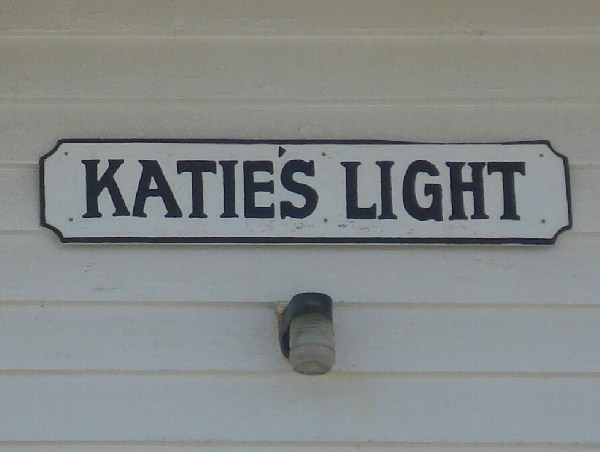
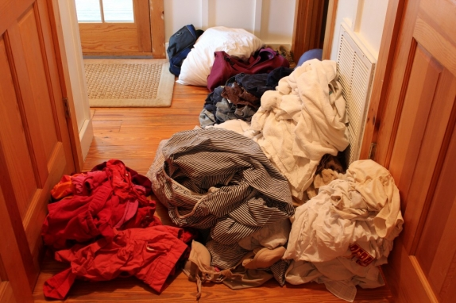
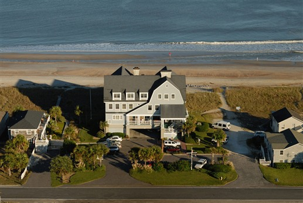

.png)
.PNG)
.PNG)
.PNG)
.PNG)
.PNG)
.JPG)
.JPG)
.PNG)
.PNG)


source
How was your weekend? Busy or relaxing? Ours was busy with lots of dirty laundry brought in from my husband and daughter who just returned from a mission trip, but it was still nice to have them return home (even with all the dirty clothes! ) 🙂

I told you all about Elizabeth Pointe Lodge the last time we were here, and today I want to tell you about another place that the Caples (the owners)  had. (They have sold the inn…boohoo.)  When my husband and I go to the beach without children we obviously get one room in the inn. When we had only 2 chldren, we would get two corner connecting rooms, and that worked very well for our family. With the addition of our third child, it was not a good solution. So we started staying in a house that the Caples operated next door called the Miller Cottage.
source
It is on the right side of this aerial photo – closest to the road. Originally it was decorated in red, white, and blue with many nautical touches, and it had a HUGE table that would seat a crowd…10 or 12…not sure. Today the interior is painted green. The giant table is gone, and it  has a very traditional island feel to it. It has only 2 bedrooms – which worked fine when our daughter was small enough to stay in a crib, but when she outgrew that, we outgrew the Miller Cottage. So what came next?
This…
This wonderful place was also owned by the Caples and is named Katie’s Light. They built this originally as their own residence and modeled it after an 1850’s lighthouse – Thomas Pointe Lighthouse on Chesapeake Bay. Just looking at it from the outside, it looks pretty small, doesn’t it? Well it is amazing what all they were able to fit inside it on both floors.
You park underneath and come in on the beach side into the big living/dining/kitchen space with that glorious ocean view….

and a quiet reading area.
There is a kitchen and a dining area with a huge table.
Before we go upstairs I wanted to show you this photo.

One summer we were staying here, and my side of the family all met at Amelia Island for a vacation. This was my daughter’s 4th birthday party held at Katie’s Light, and all of her cousins were there to enjoy it with her. Even to this day (and she is 17) she still looooves the Little Mermaid (and her older brothers were/are absolutely sick of hearing that Disney movie played over and over and over again!) Okay enough of that, let’s go upstairs.
To maximize space, the staircase is a spiral one. Turn left at the top of the stairs and you will walk into the boys’ room with the built in bunks.

Right across the hall from that room is what we call the girl’s room. Our daughter stays in there. This is actually my favorite room in the house.  It used to have an old brass bed in there, but it looks like that is now gone.
And a few steps down the hallway is the master bedroom. At one time it had a captain’s bed, but that has been replaced by a lovely green wicker one.  You can go to sleep here with the sound of the waves crashing on the beach.
Is it just me, or does this house remind you of the house in the movie Message in a Bottle? It must be because of all the stained wood. And speaking of movies, Pippi Longstocking was filmed in downtown Fernandina (the city on Amelia Island). If you’ve been there, you can easily recognize many of the buildings in the movie. The final scene shows Pippi riding her horse along the beach, and guess what house she rides right in front of. Yep….Katie’s Light. So if you can get your hands on a copy of that old movie, watch the last scene, and you can say, “I know where that was filmed!”
I debated on ending the post here and leaving you with thoughts of a very pretty house on the beach, but I decided that would not be the responsible thing to do. There is more to this story, and I would like for you to know it.
When the Caples built this replica of a lighthouse back in the 80’s they had a 3 year old daughter named Katie, and they named the home after her. She grew up to be a beautiful teenager who was athletic and involved in many charities. In the spring of 1998 Katie was coming home from a charity event and was involved in a car accident. She died 6 days later at the age of 17 – the same age that my daughter is now. Katie was loved by many, and there were over 1600 people who came to her visitation at the funeral home. (I am tearing up just typing this.) But there is more to the story…and it is good.
When Katie obtained her learner’s permit, she made the decision to be an organ donor. Because of this, the Caples were able to help save the lives of 6 people during this tragic time in their own lives. But it gets even better.
The Caples became aware of the critical shortage of tissue and organ donors and the lack of awareness regarding it. So the following year they started the Katie Caples Foundation to honor their daughter’s memory and help increase awareness of the need for tissue and organ donors. In 2005 the foundation started the Katie Ride for Life cycling fundraising event. It has grown yearly with thousands coming to Amelia Island to participate, and they have also added a walk to the event. Almost $200,000 has been donated in this year alone. These funds are used to raise awareness of the importance of organ and tissue donation among high school students. So you see, Katie’s life continues to touch many more lives even after her death.

If you would like to learn more about the Katie Caples Foundation and their projects, click on the link below the picture of the cyclists. (Gosh, I don’t mean to sound like an announcer on NPR!)
This post has been all over the place today. I started with dirty laundry, moved to a house on the beach, showed you a Little Mermaid party, and ended with organ donation. Have you been able to keep up with all of this?? Let me just wrap things up here by saying that Katie’s Light is a beautiful and unique home in a gorgeous setting.  Katie’s life was a beautiful and unique one and has made the lives of many other people better, and Katie’s parents have certainly touched the lives of many through their generous work with their daughter’s foundation.  My hope is that I have helped you to see the beauty in all of it. 🙂
Until next time…


.PNG)
Kelly, thanks for this story. I have been friends with the Caples my whole life and was fortunate enough to call Katie my first friend. We went on to share many lovely memories in this home and the one after where Susan and David live today… I too think it is a magical place and I thank you for calling it for what it really it.
Katie was one of the MOST special people I have ever been able to call my friend and since we had been friends for my whole childhood until her tragic death its always comforting to see Katie’s Light and to think back on all the great times we shared.
My Best!
————————————————————————-
Erin, I am horribly slow in answering emails (obviously!) but I wanted to thank you for your comment. You were very lucky to have Katie for a friend and be a part of the Caples’ lives. It was so terribly sad what happened to Katie, but I think it is positively wonderful what has happened to honor her memory. We should all be so lucky to be remembered in such a powerful way after we are gone. I understand that the Caples sold Elizabeth Pointe Lodge earlier this year. It just won’t be the same without them there! I hope the new owners are not making too many changes to the magical place that it too was.
Thank you again!
Kelly
I just found this post! My husband and I vacationed here at Elizabeth Pointe Lodge back in 2009. We attended a Bed and Breakfast weekend seminar that David Caples and his assistant put on. It was an enjoyable experience. The stay and Breakfast was delicious, and you get a tour to see how everything is done to run their business.
I did not know about their daughter and that you could rent Katie’s Light and the Miller cottage if you have children with you. they are such wonderful people!
Thank you so much for posting this!
Robin
————————————————————–
I have always wanted to do one of those seminars, but I don’t think my husband would ever consider running a bed and breakfast. The Caples are wonderful. I am so glad you found and enjoyed the post, Robin.
Hope you get to go back to ELP soon!
Kelly
What a beautiful place to vacation….for many reasons! Enjoy making more memories 🙂
———————————————————————–
It is a lovely place. I hope we get to go back again soon!
Kelly
Love the pic of your daughter and her party, so cute! My littlest turns one in September and I cant help but start planning her party! love it all, your blog is gold girl, you truly have a gift!
———————————————————————–
Oh Lyss, planning parties for little ones is so much fun! You will have a great time with this! I miss those days. Our last big b-day party we’ve done was my daughter’s 16th party, and we did a 16 random acts of kindness party. I appreciate your sweet comments so much!
Kelly
What a beautiful post, Kelly! Of course there were tears, but whoever said tears were a bad thing! What is that bible verse…lest a seed fall to the ground and die it cannot bring forth new life…? something like that, but that’s what your love story (that’s what it seems to me, anyway)reminded me of.
The home does remind me a bit of Message in a Bottle…love that house! Speaking of houses, have you ever seen the movie “Head Above Water” with Cameron Diaz? Beautiful ocean home and an entertaining show to boot! (I can really ramble!)
———————————————————————–
Oh Kim you made my day!! I’ll take your rambling any time, and thank you for leaving your super sweet words here. I have not seen that movie, but will have to look for it. My husband would enjoy Cameron Diaz, and I would like the house too I bet. Thanks for the suggestion.
Kelly